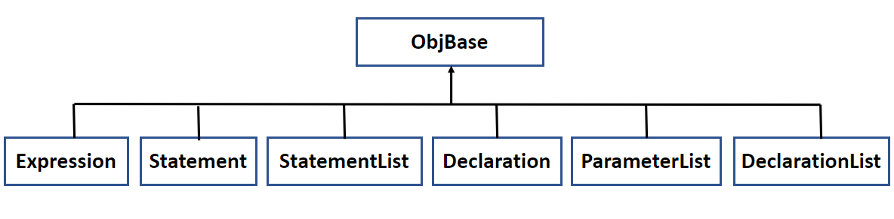
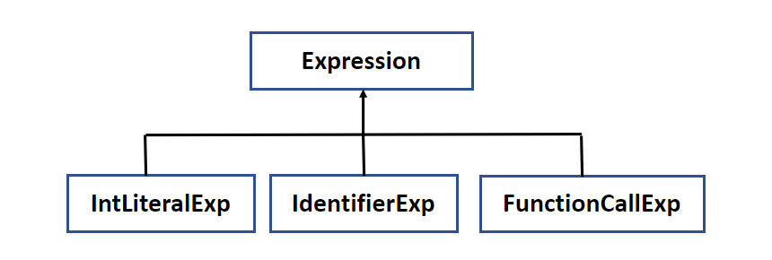
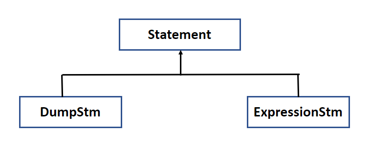
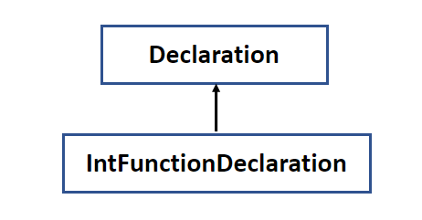

１３－０７．CLangProjectプロジェクト側
Bisonの定義ファイル
CLangProject.yからは
CLangProjectプロジェクト側で定義された、
式クラスや
文クラスのオブジェクトを構築します。
構築作業を担うのは
StackMachineクラスです。マネージャーのような役割を持っていて、起動時にインスタンスが構築されています。
そのオブジェクトに
Bisonの定義ファイルからアクセスするには
clg::StackMachine::get();
です。これで
StackMachineクラスのインスタンスのポインタにアクセスできます。
実際に
式や文などのオブジェクトの構築は、このポインタ経由で
clg::StackMachine::get()->createIntLiteralExp(yytext);
のように記述します。この例では
int型のリテラル式が構築されます。パラメータに
yytextを渡していますが、これは
50などの
整数リテラル文字列です。
クラス階層
このように
式や文は階層化されたクラスとして定義されていますが、その第一階層は以下のようになっています。

図130701
Expressionクラス
Expressionクラスは、様々な式のクラスの親クラスです。
Expressionクラスを直接構築することはなく、派生クラスを構築します。
Expressionの派生クラスは以下です。今後、まだまだいろんな
式クラスが増える予定です。

図130702
IntLiteralExpクラス
int型のリテラル式です。たとえば
50というソースファイル上の記述は
5という文字と
0という文字が並んだものです。これを
50という
整数に変換をかける式が
int型のリテラル式です。
IdentifierExpクラス
Identifierは
識別子です。
変数名や関数名など、プログラムには様々な
識別子が存在します。IdentifierExpクラスは、それを
式として構築したものです。
FunctionCallExpクラス
関数呼び出しは
式です。まだ、戻り値を返す処理は実装してませんが、
return文によって
戻り値が返るように実装していきます。
Statementクラス
Statementクラスの派生クラスは以下です。

図130703
DumpStmクラス
デバッグ出力用の文クラスです。実装が進んだら、
printf関数呼び出しで出力できるようにします。
ExpressionStmクラス
式文といわれる文です。
式を実行します。プログラムは大部分がこの
式文と言われています。
Declarationクラス
Declarationクラスの派生クラスは以下です。
Declarationというのは
宣言や定義です。実行されるわけではありません。
宣言は例えば変数の宣言とか。
定義は
関数定義とか。関数が記述されていても、
関数呼び出しが行われなければ、実行されませんが、
定義は作成する必要があります。

図130704
IntFunctionDeclarationクラス
int型を返す関数の定義です。しかし、まだ
return文を実装してませんので何も返しません。
そのほかのクラス
そのほかの
DeclarationListクラス、StatementListクラス、ParameterListクラスはそれぞれ複数のオブジェクトを1つにまとめるクラスです。
例えば
StatementListは
複数の文の集合クラスです。最終的に関数内のプログラム本体は
StatementListにまとめられます。
さて、このようにして、オブジェクト化されたプログラムコードですが、実行は
main関数から始まります。解説は次項で行います。